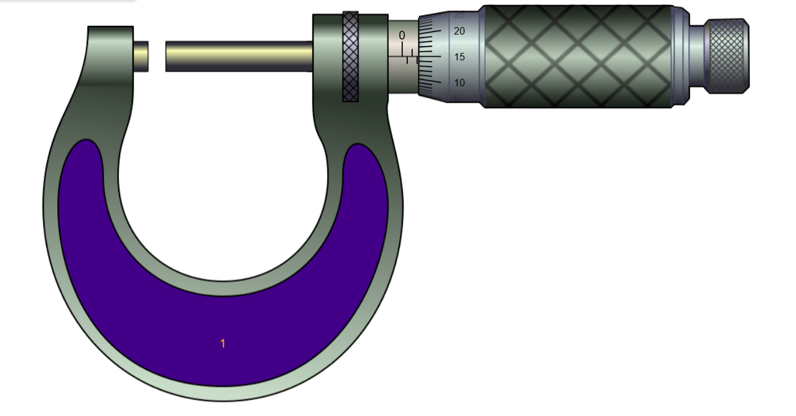

Aim
To measure the thickness and outside diameter using outside micrometer.
Introduction
+ An outside micrometer is a precision measuring instrument used to measure the external dimensions (such as diameter, thickness, or length) of small objects with high accuracy.
